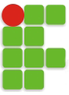

Seu navegador não tem os recursos necessários para o impress.js, então você será direcionado para uma versão simplificada desta apresentação.
Para uma melhor experiência por favor use uma versão recente do Chrome, Safari ou Firefox.

ENEDS 2015
Encontro Nacional de Engenharia e Desenvolvimento Social
Mini-curso de integração entre R-Project e LaTeX
bla bla bla...
Como tudo começou?
+ Um grupo de "nerds" querendo viver de software livre
+ Planejamento, planejamento, planejamento...
2005 ~ 2006
obrigado!
http://joenio.me
joenio@colivre.coop.br
esta apresentação foi feita com o software livre impress.js
background utilizado disponível em http://subtlepatterns.com